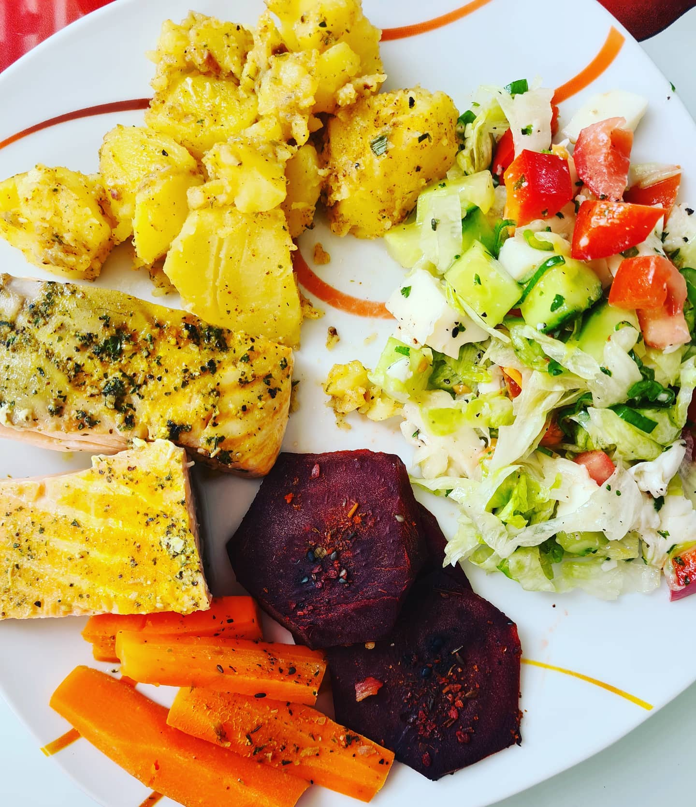

Varené zemiaky podľa @fitjedla_rychlo_a_jednoducho — Normy Jedál
#losos#varenezemiaky#zeleninovysalat#cvikla#mrkva
Dnesny obedik bol zase dokonaly a jednoduchy 😊Losos,mrkva a cvikla urobena na pare,tak ostanu vsetke vitaminy a ta chut je neopisatelna.
K tomu varene zemiaky a zeleninovy salat s mozzarellou.